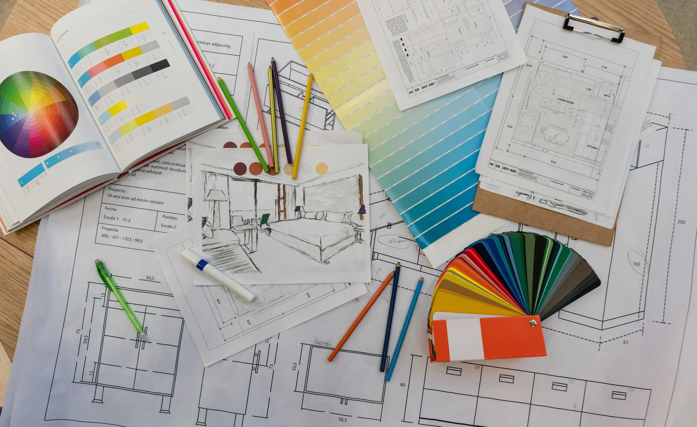

Meus projetos

Projeto inicial
Para começar um Projeto de Interiores, é preciso existir sintonia e entrosamento entre decorador e cliente. Assim, facilita-se o trabalho para a concepção de uma ideia que leve o projeto ao sucesso. Esse processo é realizado a quatro mãos. O cliente é inserido no processo de criação e execução em todas as suas etapas.

O designer de interiores planeja e projeta os mais diferentes espaços internos residenciais, comerciais e institucionais, distribuindo os elementos pensando na estética, conforto, saúde e segurança dos usuários — e, é claro, na funcionalidade do local.
Qual a diferença entre design de interiores e arquitetura? Arquitetura e Design de interiores: qual a diferença? O foco de ambos os cursos é muito diferente. O design de interiores aborda aspectos decorativos e observa a estética e a funcionalidade dos ambientes. A arquitetura, por sua vez, é mais abrangente. Abarca conceitos de urbanismo, arte, planejamento urbano, construção, paisagismo etc.